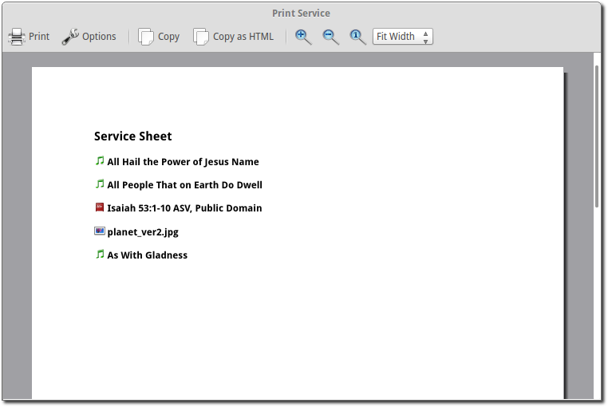
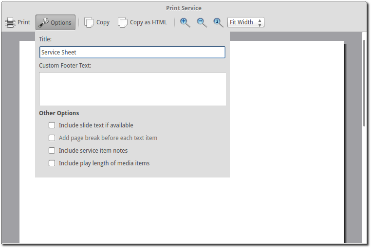

Print Service
OpenLP provides the ability to print the service order. This can be useful for a variety of reasons, such as giving the printed service to your music team so they have the song order, or so pastors or speakers can have the flow of the service.
To print your service go to or press
Control + P.
This will bring up a window with the service order for review and printing.
Toolbar
- Print:
- This will print the service bringing up the system’s print options. Use this when you are ready to print.
- Options:
- This gives you a series of ways to customize the service order before printing. See the section on Options for more information.
- Copy:
- Copy the text of the preview window to your clipboard. You can then paste the text into other documents or applications.
- Copy HTML:
- Copy html code to your clipboard. You can then paste this in a text editor and save as .html. This can then be used to post your service details on a website or anywhere an html document can be used.
- Zoom in:
- Zooms in on your preview.
- Zoom out:
- Zooms out to make more of your preview visible.
- Zoom to original:
- Restores the preview to its original size.
Options
- Title:
- Gives you the ability to change the title of the printed document.
- Custom Footer Text:
- Add text to the footer of the printed document.
Other Options
- Include slide text if available:
- Check this to include all the text from songs or scripture.
- Add page break before each text item:
- If you have checked include slide text if available you can select this option to put each text item (songs, custom slides, scripture) on a separate page.
- Include service item notes:
- This option will include any notes you have added to the service items.
- Include play length of media items:
- This option will print the length of media items in the service.
Customizing with CSS (Advanced)
It is possible to customize the printed service using CSS. To do this go to If you have a file named servicePrint.css delete it. In the open folder create a file named service_print.css containing your customizations. Paste the following into service_print.css:
/*
Edit this service_print.css file to customize the service order print. Note, that not all CSS
properties are supported. See:
http://doc.trolltech.com/4.7/richtext-html-subset.html#css-properties
*/
.serviceTitle {
font-weight:600;
font-size:x-large;
color:black;
}
.item {
color:black;
}
.itemTitle {
font-weight:600;
font-size:large;
}
.itemText {}
.itemFooter {
font-size:8px;
}
.itemNotes {}
.itemNotesTitle {
font-weight:bold;
font-size:12px;
}
.itemNotesText {
font-size:11px;
}
.media {}
.mediaTitle {
font-weight:bold;
font-size:11px;
}
.mediaText {}
.imageList {}
.customNotes {
margin-top: 10px;
}
.customNotesTitle {
font-weight:bold;
font-size:11px;
}
.customNotesText {
font-size:11px;
}
.newPage {
page-break-before:always;
}
The HTML layout should look something like this:
<html>
<head>
<title>Service Order Sheet</title>
</head>
<body>
<h1 class="serviceTitle">Service Order Sheet</h1>
<div class="item">
<h2 class="itemTitle">
<img src=":/plugins/plugin_songs.png">
<span> Amazing Grace</span>
</h2>
<div class="itemText">
<p>Amazing grace how sweet the sound that saved a wretch like me<br>
I once was lost but now I'm found, was blind but now I see.</p>
</div>
<div class="itemText">
<p>Twas grace that taught my heart to fear, and grace my fears relieved<br>
How precious did that grace appear the hour I first believed!</p>
</div>
<div class="itemFooter">
John Newton<br>
1982 Jubilate Hymns Limited
</div>
<div class="itemNotes">
<span class="itemNotesTitle">Notes:</span>
<span class="itemNotesText">Song Notes<br>
More Notes</span>
</div>
</div>
<div class="item newPage">
<h2 class="itemTitle">
<img src=":/plugins/plugin_songs.png">
<span> And Can It Be</span>
</h2>
<div class="itemText">
<p>And can be that I should gain,<br>
an interest in my Savior's blood?<br>
Died He for me, who caused His pain?<br>
For me, who Him to death pursued?<br>
Amazing love, how can it be<br>
That thou my Lord should die for me?</p>
</div>
<div class="itemText">
<p>Amazing love, how can it be<br>
That thou my God should die for me?</p>
</div>
<div class="itemFooter">
Lindell Cooley<br>
Public Domain
</div>
</div>
<div class="item">
<h2 class="itemTitle">
<img src=":/plugins/plugin_media.png">
<span> Wildlife.wmv</span>
</h2>
<div class="itemNotes">
<span class="itemNotesTitle">Notes:</span>
<span class="itemNotesText">Movie Notes</span>
</div>
<div class="media">
<span class="mediaTitle">Playing time:</span>
<span class="mediaText">0:00:00</span>
</div>
</div>
<div class="item newPage">
<h2 class="itemTitle">
<img src=":/plugins/plugin_bibles.png">
<span> John 3:16-17 (ASV)</span>
</h2>
<div class="itemText">
<p><sup>3:16</sup> For God so loved the world, that he gave his only begotten Son, that whosoever believeth on him should not perish, but have eternal life.</p>
</div>
<div class="itemText">
<p><sup>3:17</sup> For God sent not the Son into the world to judge the world; but that the world should be saved through him.</p>
</div>
<div class="itemFooter">
ASV, Copyright, Permissions
</div>
<div class="itemNotes">
<span class="itemNotesTitle">Notes:</span>
<span class="itemNotesText">Bible reading notes</span>
</div>
</div>
<div class="item">
<h2 class="itemTitle">
<img src=":/plugins/plugin_images.png">
<span> Images</span>
</h2>
<ol class="imageList">
<li>Winter.jpg</li>
<li>Sunset.jpg</li>
</ol>
<div class="itemNotes">
<span class="itemNotesTitle">Notes:</span>
<span class="itemNotesText">Image notes</span>
</div>
</div>
<div class="item newPage">
<h2 class="itemTitle">
<img src=":/plugins/plugin_custom.png">
<span> Lord's Prayer Traditional</span>
</h2>
<div class="itemText">
<p>Our Father,<br>
who art in heaven,<br>
hallowed be thy name.<br>
Thy Kingdom come,<br>
thy will be done,<br>
on earth as it is in heaven</p>
</div>
<div class="itemText">
<p>Give us this day our daily bread.<br>
And forgive us our trespasses,<br>
as we forgive those<br>
who trespass against us.<br>
And lead us not into temptation,<br>
but deliver us from evil.<br>
For thine is the kingdom,<br>
the power and the glory,<br>
for ever and ever. Amen</p>
</div>
<div class="itemNotes">
<span class="itemNotesTitle">Notes:</span>
<span class="itemNotesText">Custom Item Notes</span>
</div>
</div>
<div class="item">
<h2 class="itemTitle">
<img src=":/plugins/plugin_presentations.png">
<span> Sermon Presentation.pptx</span>
</h2>
<div class="itemNotes">
<span class="itemNotesTitle">Notes:</span>
<span class="itemNotesText">Presentation notes</span>
</div>
</div>
<div class="customNotes">
<span class="customNotesTitle">Custom Service Notes:</span>
<span class="customNotesText">Custom Footer Text Goes here like this</span>
</div>
</body>
</html>
Edit the CSS file to produce the required style.
Note: not all CSS properties are supported. See Qt4 CSS subset for more information.
Example: Item titles with notes on right hand side.
This service_print.css assumes the slide text will not be included.:
.itemTitle {
font-weight:bold;
font-size:large;
margin: 0px;
}
.itemNotes {
margin-left: 300px;
margin-top: 0px;
}
.itemNotesTitle {
font-weight:bold;
}